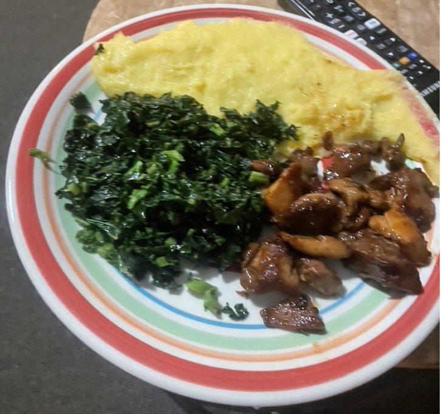

Description
This meal is a Zimbabwean staple dish! Enjoy!
Indulge in the rich flavors of Zimbabwean cuisine with this hearty Isitshwala (Sadza) dish paired with kale and chicken.
The maize-based Isitshwala forms a comforting base, complemented by tender chicken pieces and vibrant kale. A medley of aromatic
spices and vegetables brings depth to the dish, creating a wholesome and satisfying meal. Easy to prepare and bursting with flavors, this recipe promises a delightful dining experience for those seeking
a taste of authentic African comfort food.
Ingredients:
For Isitshwala (Sadza):
- 2 cups maize meal (cornmeal)
- 4 cups water
For Kale and Chicken:
- 1 lb chicken, cut into pieces
- 2 cups chopped kale
- 1 onion, finely chopped
- 2 tomatoes, chopped
- 2 cloves garlic, minced
- 1 teaspoon ginger, grated
- 2 tablespoons cooking oil
- Salt and pepper to taste
- 1 teaspoon paprika (optional, for extra flavor)
Recipe:
1. Prepare the Isitshwala (Sadza):
- In a large pot, bring 4 cups of water to a boil.
- In a separate bowl, mix the maize meal with enough cold water to make a smooth paste.
- Gradually add the maize meal paste to the boiling water, stirring continuously to avoid lumps.
- Reduce the heat to low and let it simmer, stirring regularly to prevent sticking, until the mixture thickens and
forms a stiff porridge.
- Cover the pot and let it steam for an additional 10-15 minutes.
2. Cook the Kale and Chicken:
- In a large skillet, heat the cooking oil over medium heat.
- Add the chopped onions and sauté until they become translucent.
- Add the minced garlic and grated ginger, and sauté for an additional minute until fragrant.
- Add the chicken pieces to the skillet and cook until browned on all sides.
- Stir in the chopped tomatoes, salt, pepper, and paprika (if using). Cook until the tomatoes are softened.
- Add the chopped kale to the skillet and stir well. Cook until the kale is wilted and the chicken is fully
cooked.
3. Serve:
- Spoon a generous portion of Isitshwala onto individual plates or a large serving platter.
- Top the Isitshwala with the kale and chicken mixture.
- Serve hot and enjoy your delicious Isitshwala with kale and chicken!